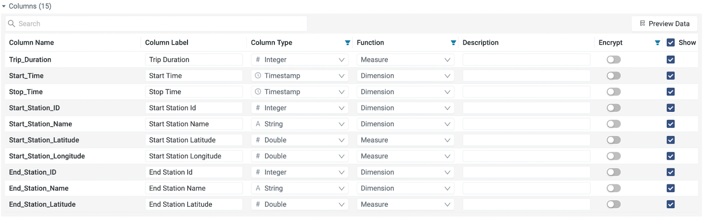
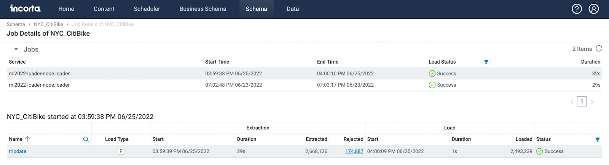
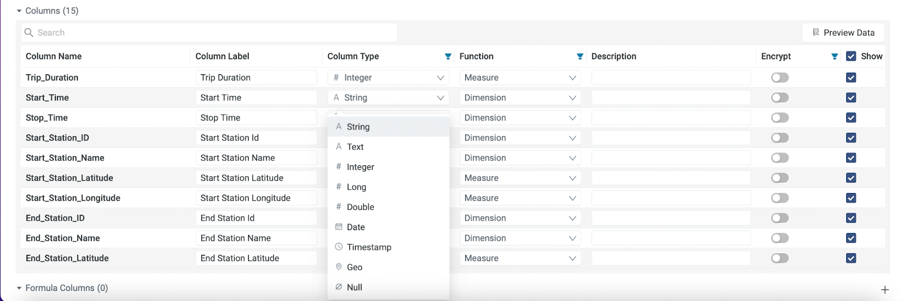
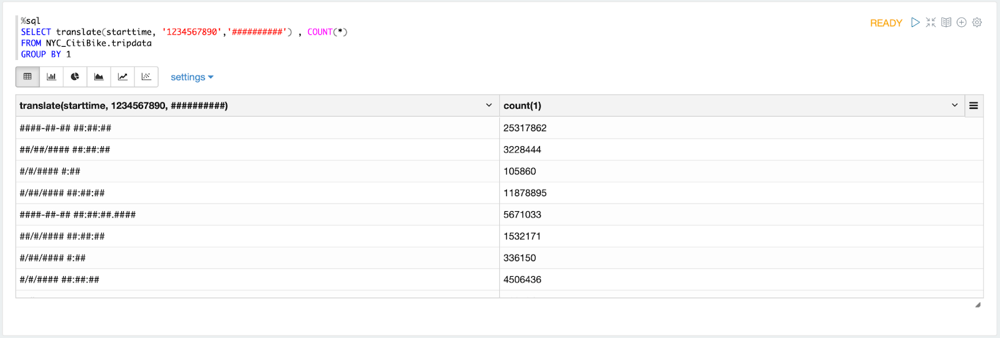
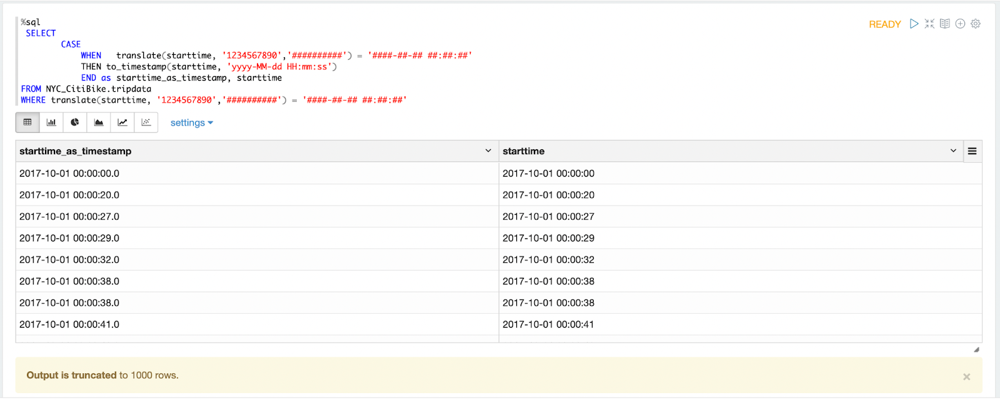
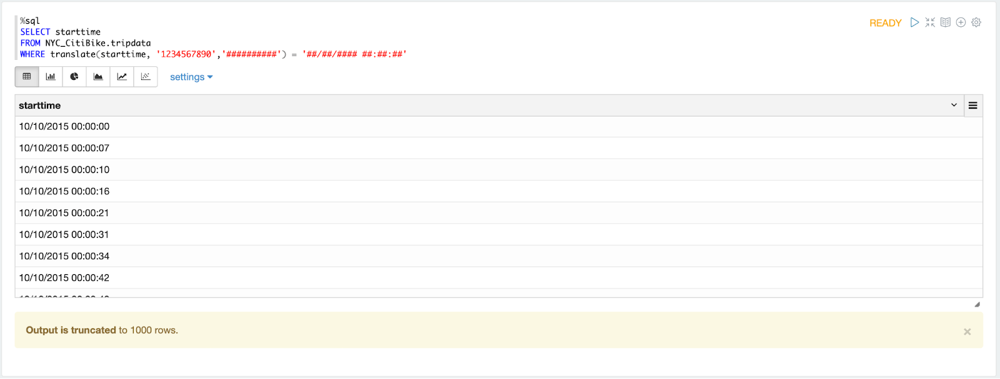
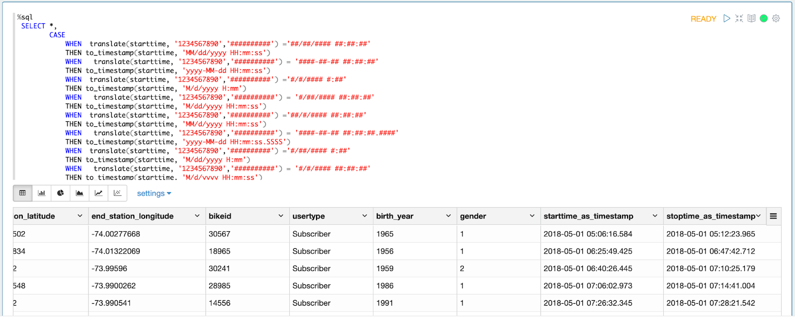
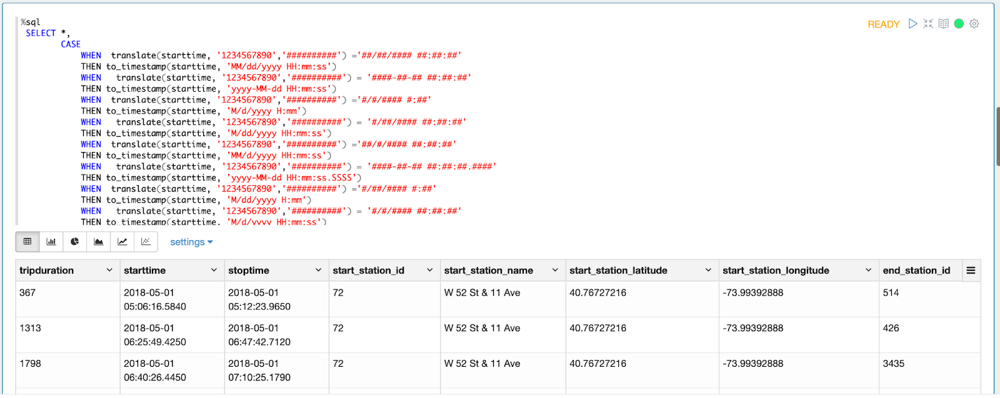

資料常常有缺失或不一致的情形
這個是用NYC Citibike的資料來作為案例
大致上分為兩個步驟
在分析資料之前必須要確認每個資料的 Column Type，要是正確的 Column Type ，之後的分析計算算才能順利成功。
Start_Station_Name 要是 String
Start_Station_ID 要是 Integer
Start_Time 要是 Timestamp

若是 load data 時出現問題，或是 extarction 出現 rejected ，這時候很有可能是 column type 出現問題，這個 codelab 就是想要解決，當時間型態出現問題時，該如何解決

先將 incorta table 內需要修改的 column type 轉換成 string ，再做後續處理

開一個新的 Materialized View ，利用 translate，將數字轉換成##，可以查看 starttime 的顯示型態，可以發現有 ####-##-## ##:##:##, ##/##/#### ##:##:##, ...等不同的形式
%sql
SELECT translate(starttime, '1234567890','##########') , COUNT(*)
FROM NYC_CitiBike.tripdata
GROUP BY 1
to_timestamp 將 string 轉換成 timestamp ex : to_timestamp(starttime, 'yyyy-MM-dd HH:mm:ss')
利用 CASE WHEN ＋ WHERE 檢查各種形式轉換後的樣子，是否有轉換成功
%sql
SELECT
CASE
WHEN translate(starttime, '1234567890','##########') = '####-##-## ##:##:##'
THEN to_timestamp(starttime, 'yyyy-MM-dd HH:mm:ss')
END as starttime_as_timestamp, starttime
FROM NYC_CitiBike.tripdata
WHERE translate(starttime, '1234567890','##########') = '####-##-## ##:##:##'
WHERE 確認 年-月-日 時：分：秒, 月/日/年 時：分：秒, ...等 分別的位置，再回到上一步驟，將 'yyyy-MM-dd HH:mm:ss' 填寫正確可參考此連結：https://spark.apache.org/docs/latest/sql-ref-datetime-pattern.html
%sql
SELECT starttime
FROM NYC_CitiBike.tripdata
WHERE translate(starttime, '1234567890','##########') = '##/##/#### ##:##:##'
將所有可能試過一遍之後，把 code 貼到另一個新的 paragraph ，記得starttime和stoptime都要轉換：
%sql
SELECT *,
CASE
WHEN translate(starttime, '1234567890','##########') ='##/##/#### ##:##:##'
THEN to_timestamp(starttime, 'MM/dd/yyyy HH:mm:ss')
WHEN translate(starttime, '1234567890','##########') = '####-##-## ##:##:##'
THEN to_timestamp(starttime, 'yyyy-MM-dd HH:mm:ss')
WHEN translate(starttime, '1234567890','##########') ='#/#/#### #:##'
THEN to_timestamp(starttime, 'M/d/yyyy H:mm')
WHEN translate(starttime, '1234567890','##########') = '#/##/#### ##:##:##'
THEN to_timestamp(starttime, 'M/dd/yyyy HH:mm:ss')
WHEN translate(starttime, '1234567890','##########') ='##/#/#### ##:##:##'
THEN to_timestamp(starttime, 'MM/d/yyyy HH:mm:ss')
WHEN translate(starttime, '1234567890','##########') = '####-##-## ##:##:##.####'
THEN to_timestamp(starttime, 'yyyy-MM-dd HH:mm:ss.SSSS')
WHEN translate(starttime, '1234567890','##########') ='#/##/#### #:##'
THEN to_timestamp(starttime, 'M/dd/yyyy H:mm')
WHEN translate(starttime, '1234567890','##########') = '#/#/#### ##:##:##'
THEN to_timestamp(starttime, 'M/d/yyyy HH:mm:ss')
WHEN translate(starttime, '1234567890','##########') ='#/#/#### ##:##'
THEN to_timestamp(starttime, 'M/d/yyyy HH:mm')
WHEN translate(starttime, '1234567890','##########') ='#/##/#### ##:##'
THEN to_timestamp(starttime, 'M/dd/yyyy HH:mm')
END AS starttime_as_timestamp,
CASE
WHEN translate(stoptime, '1234567890','##########') ='##/##/#### ##:##:##'
THEN to_timestamp(stoptime, 'MM/dd/yyyy HH:mm:ss')
WHEN translate(stoptime, '1234567890','##########') = '####-##-## ##:##:##'
THEN to_timestamp(stoptime, 'yyyy-MM-dd HH:mm:ss')
WHEN translate(stoptime, '1234567890','##########') ='#/#/#### #:##'
THEN to_timestamp(stoptime, 'M/d/yyyy H:mm')
WHEN translate(stoptime, '1234567890','##########') = '#/##/#### ##:##:##'
THEN to_timestamp(stoptime, 'M/dd/yyyy HH:mm:ss')
WHEN translate(stoptime, '1234567890','##########') ='##/#/#### ##:##:##'
THEN to_timestamp(stoptime, 'MM/d/yyyy HH:mm:ss')
WHEN translate(stoptime, '1234567890','##########') = '####-##-## ##:##:##.####'
THEN to_timestamp(stoptime, 'yyyy-MM-dd HH:mm:ss.SSSS')
WHEN translate(stoptime, '1234567890','##########') ='#/##/#### #:##'
THEN to_timestamp(stoptime, 'M/dd/yyyy H:mm')
WHEN translate(stoptime, '1234567890','##########') = '#/#/#### ##:##:##'
THEN to_timestamp(stoptime, 'M/d/yyyy HH:mm:ss')
WHEN translate(stoptime, '1234567890','##########') ='#/#/#### ##:##'
THEN to_timestamp(stoptime, 'M/d/yyyy HH:mm')
WHEN translate(stoptime, '1234567890','##########') ='#/##/#### ##:##'
THEN to_timestamp(stoptime, 'M/dd/yyyy HH:mm')
END AS stoptime_as_timestamp
FROM NYC_CitiBike.tripdata
WHERE tripduration is not null 
完成並儲存此 paragraph
